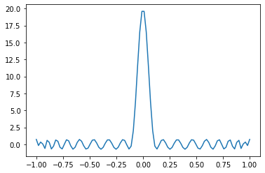

We are going to apply a delta function to the Hamiltonian (\(H\)) such that all states with eigenvalues outside a specific energy (\(\lambda \pm \Delta/2\)) are supressed. This is performed by applying the operation,
using quantum signal processing Where \(T_n\) is the chebyshev polynomial of the first kind. The polynomial with approximation order \(k=20\) for \(\Delta = 0.1\) is shown below.
from scipy.special import eval_chebytimport numpy as npimport matplotlib.pyplot as pltk =20delta =0.1def filter_func(x, delta, k): val =0for i inrange(k): arg =-1+2*((x**2-delta**2)/(1-delta**2)) topk = eval_chebyt(k, arg) arg =-1+2*(-delta**2/(1-delta**2)) botk = eval_chebyt(k, arg) val += topk/botkreturn valxs = np.linspace(-1, 1, 100)ys = np.zeros(len(xs))for i, x inenumerate(xs): ys[i] = filter_func(x, delta, k)plt.plot(xs, ys)

This polynomial needs to be converted to phases to use Quantum Signal Processing. For conveinience, here are the phases for \(k=20\) and \(\Delta = 0.1\). At the end of the notebook, there are two ways to calculate the phases given a polynomial.
We are going to prepare two different states using the phases above and the Quantum Signal Processing circuit get_qsp_circuit_no_anc as defined in arXiv:2002.11649.
We are going to apply it to H2 in a STO-3G basis with the “scbk” qubit mapping.
We need to shift the Hamiltonian such that the desired eigenvalue (\(\lambda\)) is centered at zero and the spectral range is in [-1, 1]. This is done by
where \(\alpha\) is the approximation to the spectral range.
from tangelo.linq import Circuit, Gate, get_backendfrom tangelo.toolboxes.circuits.qsp import get_qsp_circuit_no_ancfrom tangelo.toolboxes.circuits.lcu import get_uprep_uselect, get_lcu_qubit_op_infolamb = eigs[1]# Shift Hamiltonian so that spectrum is in [-1, 1] and desired lambda is at 0qu_op_tilde = (qu_op - lamb)/(alpha+abs(lamb))qu_op_qs, m_qs, alpha = get_lcu_qubit_op_info(qu_op_tilde)uprep, uselect, qu_op_qs, m_qs, alpha = get_uprep_uselect(qu_op_tilde)cua = uprep + uselect + uprep.inverse()eig_filt_circ = get_qsp_circuit_no_anc(cua, m_qs, phases)# Add the mesurement gates to the ancilla qubits for the application of the Linear Combination# of Unitaries plus the extra qubit for the QSP# Measure gates for LCU ancilla qubitsfull_circuit = init_circ + eig_filt_circ + Circuit([Gate("MEASURE", m) for m in m_qs])# Measure gate for the QSP qubit where the phases are appliedfull_circuit += Circuit([Gate("MEASURE", m_qs[-1]+1)])
sim = get_backend("qulacs")f, sv = sim.simulate(full_circuit, desired_meas_result="0000", return_statevector=True)# Pick out part of wavefunction that corresponds to "0000" on ancilla qubitssv = np.reshape(sv, (2**4, 4))[0, :]# Reorder statevector to correspond to openfermion orderingsv = np.reshape(sv, (2,2)).T.flatten()print(f'initial overlap = {abs(np.dot(vecs[:,1], init_state))}')print(f'final overlap = {abs(np.dot(vecs[:,1], sv))}')
initial overlap = 0.5096635574715872
final overlap = 0.9987906479750979
Second excited state
lamb = eigs[2]# Shift Hamiltonian so that spectrum is in [-1, 1] and desired lambda is at 0qu_op_tilde = (qu_op - lamb)/(alpha+abs(lamb))qu_op_qs, m_qs, alpha = get_lcu_qubit_op_info(qu_op_tilde)uprep, uselect, qu_op_qs, m_qs, alpha = get_uprep_uselect(qu_op_tilde)cua = uprep + uselect + uprep.inverse()eig_filt_circ = get_qsp_circuit_no_anc(cua, m_qs, phases)full_circuit = init_circ + eig_filt_circ + Circuit([Gate("MEASURE", m) for m in m_qs])full_circuit += Circuit([Gate("MEASURE", m_qs[-1]+1)])
sim = get_backend("qulacs")f, sv = sim.simulate(full_circuit, desired_meas_result="0000", return_statevector=True)# Pick out part of wavefunction that corresponds to "0000" on ancilla qubitssv = np.reshape(sv, (2**4, 4))[0, :]# Reorder statevector to correspond to openfermion orderingsv = np.reshape(sv, (2,2)).T.flatten()
initial overlap = 0.8563893032170957
final overlap = 0.9997976485907082
Code to generate phases
All code cells are changed to markdown as other packages are required to run the following phase calculations.
Using QSPPACK
from sympy.abc import xfrom sympy import Rationalfrom sympy.polys.polytools import primitivefrom sympy.functions.special.polynomials import chebyshevtk =20# Necessary to work in exact representation for higher order polynomialsdelta = Rational(delta)def filter_func(x, delta, k): val =0for i inrange(k): arg =-1+2*((x**2-delta**2)/(1-delta**2)) topk = chebyshevt(k, arg) arg =-1+2*(-delta**2/(1-delta**2)) botk = chebyshevt(k, arg) val += topk/botkreturn val
Need to convert polynomial to coefficients of expansion in Chebyshev polynomials
Use oct2py (with octave installed) and the folder location of QSPPACK cloned from https://github.com/qsppack/QSPPACK.
from oct2py import octaveeps =0.01folder ='path to QSPPACK'octave.addpath(folder)opts = octave.struct("criteria", eps)phases, _ = octave.QSP_solver(aks, 0, opts, nout=2)
Using pyqsp
For \(k=20\) pyqsp with laurent works properly. However, it often fails for higher order polynomials. In that case, you will need to install tensorflow and use the method=tf which is much slower than QSPPACK.
import pyqspfrom pyqsp import angle_sequencefrom pyqsp.angle_sequence import AngleFindingErrorfrom pyqsp.completion import CompletionError# Compute phases for real part Cos(Ht) of Exp(iHt)pg = pyqsp.poly.PolyCosineTX()prefac, poly = primitive(filter_func(x, delta, k))poly = poly.as_poly()polydict = poly.as_dict()coefs = np.zeros(2*k +1, dtype=float)for term, coeff in polydict.items(): coefs[term[0]] = prefac*coeff/k/np.sqrt(2)n_attempts =100method ='laurent'eps=0.01for i inrange(n_attempts):try: phases = angle_sequence.QuantumSignalProcessingPhases( coefs, eps=eps, suc=1-eps/10, method=method, tolerance=0.01)except (AngleFindingError, CompletionError):if i == n_attempts-1:raiseRuntimeError("Real phases calculation failed, increase n_attempts or eps")else:print(f"Attempt {i+2} for the real coefficients")else:break